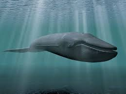
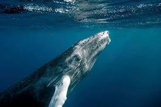
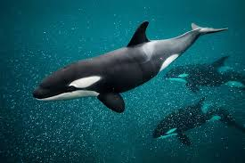

Types of Whales
Whales come in many shapes and sizes, from the enormous blue whale to the intelligent and social orca. Below, explore different types of whales, their characteristics, and how they compare.
üêã Blue Whale
The blue whale is the largest animal on Earth, growing up to 100 feet long. It primarily feeds on krill and can be found in oceans worldwide.
üêã Humpback Whale
Humpback whales are known for their spectacular breaches and complex songs. They migrate long distances and play a vital role in marine ecosystems.
üêã Orca (Killer Whale)
Orcas, or killer whales, are apex predators with strong social structures. They hunt in pods and communicate using unique vocalizations.
üêã Sperm Whale

The sperm whale has the largest brain of any animal and is known for its deep-diving abilities to hunt squid.
üêã Whale Comparison Table
| Whale Type | Size (Feet) | Diet | Habitat | Picture |
|---|---|---|---|---|
| Blue Whale | Up to 100 ft | Krill | Worldwide | |
| Humpback Whale | Up to 60 ft | Krill, Small Fish | Oceans Worldwide | |
| Orca (Killer Whale) | Up to 32 ft | Fish, Seals | All Oceans | |
| Sperm Whale | Up to 55 ft | Squid | Deep Oceans | |